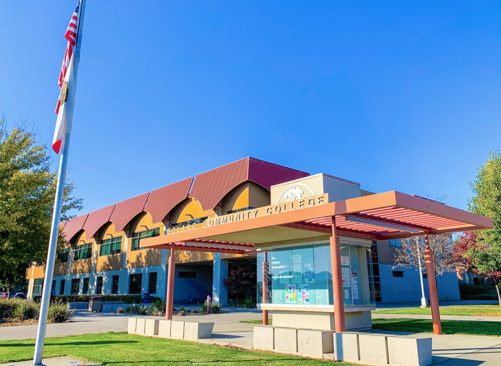
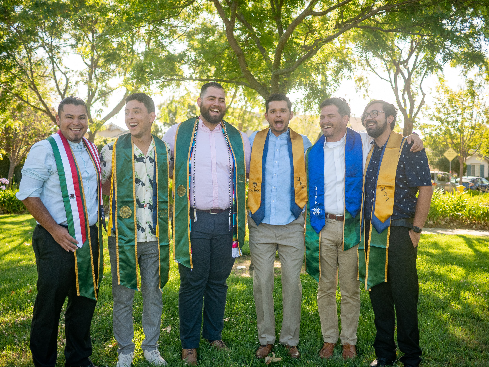

About

My name is Diego Andrade, and I was born and raised in Northern California. In essence, I am a curious, inquisitive, ambitious, and social individual who firmly believes that the most valuable things in life are the experiences we embrace and the meaningful connections we foster with others. As I step into this new chapter of my life armed with a degree in Computer Engineering, I am driven to pursue a fulfilling career where I can make a meaningful impact. With my insatiable curiosity and passion for technology, I am determined to contribute to the advancement of the digital age and its potential to improve the lives of people worldwide. Embracing challenges as opportunities for growth, I aspire to be a part of the transformative changes that will shape a brighter future for generations to come.
From a young age, my inquisitive nature often led me to get into trouble. I was incredibly curious, always eager to be in the middle of the action. I frequently asked my parents questions, genuinely interested in understanding what they were doing and the reasons behind it. I also couldn't resist tinkering, disassembling, and sometimes breaking things to uncover their inner workings. As you can imagine, this didn't always sit well with my parents. I especially held a deep fascination for mechanical toys, especially robots, cars, and helicopters (i.e. Air Hogs), which unfortunately my parents couldn't afford. One day, when I was 12 years old, I stumbled upon a cheap computer at a yard sale. I pleaded with my parents to get it, and to my surprise, they actually did! I was finally given a computer of my own, a possession I cherished greatly and made uniquely mine. The world of computers opened up before me, and I plunged deep into exploring their capabilities.
One of my earliest endeavors with my newly acquired computer was delving into the world of Minecraft. Its open-world sandbox nature captivated me, offering endless possibilities to unleash my creativity. In particular, I found myself deeply fascinated with constructing bases, agricultural farms, and mob farms. Moreover, Minecraft incorporates a surprisingly simple yet complex mechanism similar to that of electrical circuits, which enables players to add dynamics and environment responsiveness to their creations. For instance, one could create elevators, intricate automated doors, or automated farm harvesters, to name a few. I learned all sorts of things about Minecraft circuits, such as actuators, logic gates, and sensors. Eventually, my learning journey led me to mods, which expanded Minecraft's creation capabilities. One mod, in particular, caught my attention: Computercraft. This mod allowed players to build in-game robots programmable with LUA, to perform various tasks. I taught myself how to program in LUA in order to create automated tree farmers, quarry miners, and much more with these robots. The joy I experienced while programming these virtual robots was undeniable, and it was from that moment on, I knew I wanted to pursue a career in programming and electronics.

The next significant milestone in my life occurred during the second half of my junior year when I discovered that my school had a FIRST Robotics team and offered a robotics elective course! It was my first time ever learning that such a program existed. Without hesitation, I eagerly signed up for the class series and started attending the after-school meetings. I dedicated considerable effort and time to the team, spending many late afternoons at school, immersing myself in learning everything about robots and assisting with any tasks that needed to be done. Before long, I had acquired the skills necessary to take charge of programming the robot, eventually becoming the main programmer. It turned out to be a remarkable journey as our robotics team qualified for the championships in Houston, TX. Although we didn't make it to the finals at Worlds, the experience was truly invaluable. Being a part of the team taught me the essence of teamwork and how to thrive under pressure during competitions. Moreover, it provided me with the opportunity to forge deep and lasting friendships, some of which continue to be my best friends to this day, and for many more years to come. Additionally, this experience further solidified my determination to pursue a career as a Computer Engineer.
While engineering and electronics are a big part of my life, I strongly believe in maintaining a healthy work-life balance. It's essential to engage in activities that nurture both the mind and soul. For me, that means spending quality time with friends, whether we're hiking, backpacking, or simply enjoying a relaxing day at home playing games. Additionally, I have a deep passion for exploring new places and embarking on adventures with my cherished family and friends. There's an entire world waiting to be discovered, and I'm eager to continue this journey of exploration and shared experiences.
Education
My educational journey commenced at Solano Community College, a practical choice given its proximity, cost-effectiveness, and the opportunity to complete my general education credits while working part-time. During my time there, I gained a better understanding of higher education and took the initial steps towards realizing my dream of becoming an engineer. The college's focus on serving commuting students with specific goals brought me into contact with responsible and dedicated peers who shared my commitment to academics and transferring to a four-year university. Connecting with like-minded individuals proved to be truly rewarding, leading me to forge lasting friendships that continue to thrive to this day.
In addition to my studies, I took on the challenge of establishing a robotics club, an experience that taught me valuable lessons in leadership and administrative responsibilities. The process of organizing and founding the robotics club presented its fair share of challenges, particularly in garnering student interest, recruiting new members, and securing the necessary resources to maintain an active club with funding and support from the college. However, I faced these obstacles with enthusiasm and determination, ultimately turning them into valuable learning experiences.
By the end of my time at Solano Community College, I had earned three associate degrees: Mathematics (AS-T), Physics (AS-T), and General Science (AA). My dedication and hard work paid off, enabling me to achieve my goal of being accepted at my top-choice state school, Cal Poly, San Luis Obispo. I am immensely grateful for the impact my classmates, friends, and professors had on my journey, preparing me for the next chapter of my educational career.

During my time at Cal Poly, San Luis Obispo, I experienced some of the most transformative and fulfilling moments of my life. Academically and personally, I flourished, solidifying my values, beliefs, and career aspirations. The friendships I formed during this chapter have become a cherished part of my life, with my peers challenging me both socially and mentally, engaging in exhilarating engineering discussions, and envisioning life plans after college. The passion of my aerospace engineering roommates and fellow enthusiasts reawakened and ignited my fascination with space, a childhood interest I had long forgotten.
Cal Poly's renowned "Learn by Doing" approach was more than just a motto; it was an integral part of my education. The opportunity to work hands-on with a diverse range of projects was a highlight of my college journey. From developing a simple 2D Java game to designing intricate circuits and computer architectures, I continuously honed my skills. The opportunities even extended to collaborating with a startup, where I gained a profound sense of the industry, ownership of a product, and insight into the challenges faced when designing a product for commercial use. The unwavering support and mentorship from faculty were extraordinary. My professor, who later became my senior project advisor, along with all the other Cal Poly professors, exemplified what great instructors should be, encouraging us to delve beyond textbooks and strive for a deeper understanding. Doors were always open for us, inspiring a thirst for continuous learning. This eventually led to an excellent and satisfactory closure of school when I worked on my senior project. The project was fully my team's own creation, from requirements to goals to the final product, allowing us to apply all the skills we had learned up until that point.
The wealth of opportunities at Cal Poly extended beyond the classroom. Engaging in the school's career fair led me to a fulfilling 9-month co-op at Keysight Technologies, a valuable opportunity that allowed me to apply my skills while learning how a high-end company operates. Additionally, Cal Poly fostered many clubs like SHPE and NSBE, which provided a strong sense of identity and camaraderie among students sharing similar interests. The clubs played a pivotal role in propelling students towards successful careers by providing mentoring, workshops, and most importantly, access to conventions with prominent career fairs. It was at the NSBE national convention that I secured my second internship at Edwards Lifesciences, which further expanded my professional journey. Even during challenging times, such as the 2019 Covid pandemic, the unwavering support from the clubs and school helped keep me on track.
In December 2022, I proudly graduated with my Bachelor's of Science in Computer Engineering, ready to embark on a new chapter in my life. My time at Cal Poly has left an indelible mark, shaping me into the person and professional I am today. The memories, friendships, and the invaluable "Learn by Doing" experience will forever influence my path ahead, as I look forward to making a meaningful impact in the world of technology and engineering.
Contact

Diego Andrade
Doandrade11@gmail.comGitHub
I am always open to engaging in interesting discussions and eager to participate in talks about anything under the sun! Whether you want to inquire about my experiences, share ideas, or simply have a casual chat, feel free to reach out. I believe that meaningful connections and conversations can lead to great insights and growth, so don't hesitate to connect with me. Let's explore new perspectives together and inspire each other with our thoughts and experiences!